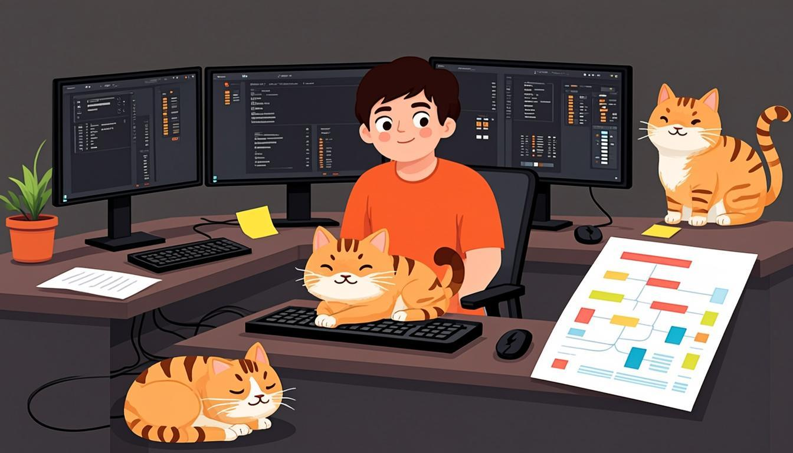

Warm-up
10 minthe cats take the floor🎧 Listen to the questions
❓ Three questions — click a card to open the sentence starters
Listening — The Office Cats of Harbour Lights
10 minaudio + comprehension
🧩 Before you listen: month 1 review — 10 words
Click a word — a definition and an example will open. The Russian gloss is there to check your understanding. Listen to the recording of all ten words.
🎧 Track 1 — The Office Cats of Harbour Lights
🌍 Extension — TED-Ed (from the yearly plan)
The history of the world according to cats ↗ (TED-Ed, with interactive questions)
Watch once for fun, second time note 3 Present Simple facts about cats and 1 Continuous action (what the cats are doing in the animation). The video is also embedded at the end of this lesson.
Reading — Cat Diary
7 mintext + full-module spottingThree Cats, One Studio
A cat in an office is not a mascot — it is a manager. At Harbour Lights, Pixel usually starts the day by checking the warm chairs, and Boss always inspects the new build: she sits on the keyboard until somebody notices. The third cat, Lag, owns the radiator and does not share it with anyone.
This week the studio is shipping the winter update, and the cats are busier than the developers. They are testing every empty box, attending every meeting and sleeping on the roadmap, which means the roadmap is blocked — a situation the team understands perfectly. The artists are drawing Pixel into the cat café level right now, and Boss is supervising them. Zero article for the general truth: cats make good managers, but bad QA — they refuse to file bug reports.
🌍 Extension — National Geographic: Animals
Pick any short piece about cats or pets: nationalgeographic.com/animals ↗
Retell it in 3 sentences with correct articles. Bring one "first mention → second mention" pair (a cat → the cat) to class.
Grammar — Consolidation: Say the Rules Yourself
8 mincheck-list + quiz video🗣 The rules in your own words
Before the test — formulate three rules out loud, without looking at Lessons 1–3. Then click each card and compare with the model. Saying rules aloud automates them faster than re-reading.
⚙️ The module on one screen
| Topic | Rule in one line | Example from your month |
|---|---|---|
| Present Simple | routines, facts, schedules | We ship an update every two weeks. |
| Present Continuous | now, this week, temporary, trends | This week we are testing the winter build. |
| State verbs | know, prefer, own, believe — no -ing | She knows the roadmap. |
| Frequency adverbs | before the main verb, after "be" | He always double-checks. He is never late. |
| a / an | first mention, jobs, one of many | I run a studio. She is an artist. |
| the | second mention, unique in context, superlatives | The studio is small. The first version is the worst. |
| zero article | general ideas, plurals, uncountables | Business is hard. Deadlines matter. Advice is cheap. |
🎬 Fun check — The Grammar Gameshow: Present Simple vs Continuous (16 min)
Grammar → Speaking — the main section of the lesson
10 mingoal: mixed output without grammar pauses🎙 Round 1 — Cat Office Simple Continuous a / the / zero
Describe the working day of your three cats (or the studio cats from the story) in 90 seconds. Requirements: 2 routines, 2 things happening right now, 1 state verb, and one a → the pair.
🎙 Round 2 — Cats or Dogs for a Remote Worker? mini-debate
Two minutes, pick a side. Requirements: at least 3 state verbs (prefer, believe, understand, need, own…) and at least 2 Continuous forms (what pets are doing these days).
⚡ Round 3 — Repetition Loop one sentence per answer
Six quick questions from Lessons 1–3 — answer each with one full sentence, no notes. The teacher (or you yourself) reads the question, you answer instantly.
🔊 Shadowing — the month in two tracks
Track A mixes Simple and Continuous in the same sentences, Track B drills the articles. Listen to a sentence → repeat it out loud in the pause. Two loops per track — ideal as a warm-up before the test.
Module Test 1 — 15 minutes
24 items + 1 speaking taskno peeking at the rules🎙 Part 5 — Speaking transformation (record it)
Transform each sentence from Simple into Continuous — or the other way — and say it out loud. Click a card to see the model answer after you have spoken.
Homework
≤ 30 minutes in total🎬 Bonus — TED-Ed: The history of the world according to cats (4.5 min)
🧑🏫 Teacher notes
Goal: consolidate the whole module and measure it: the student formulates the rules herself, then passes the 15-minute test without looking back at the rules.
Suggested flow: Warm-up with the grammar police game → Listening: the cats story covers the whole module at once → Reading: hunt for a→the pairs → Grammar: the student says the rules aloud BEFORE opening the cards — this is the actual exercise, the cards are only the answer key → Speaking: Rounds 1–2 are the dress rehearsal for the test's speaking part → Test: one sitting, 15 minutes, note the weak spots for the Module 2 opener.
Success criteria: the test — 70%+ overall, no state-verb errors, ≤2 article slips; Round 1 — the full requirement set (2 routines + 2 Continuous + 1 state verb + one a→the pair).
After the test: parts below 60% point to the lesson to revisit (Part 1–2 → Lesson 1, Part 3 → Lesson 2, Part 4 → Lesson 3). The full error review happens at the start of Lesson 5.
Threads: the cats and Dana's team return in Module 2 (past-tense stories about the winter update release); the roadmap storyline moves to Module 4 (plans and forecasts).